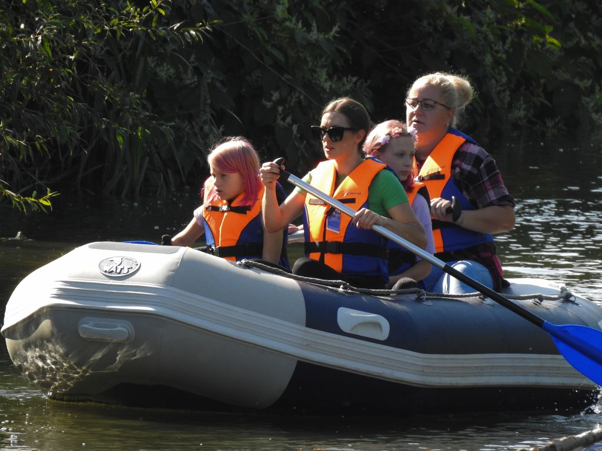
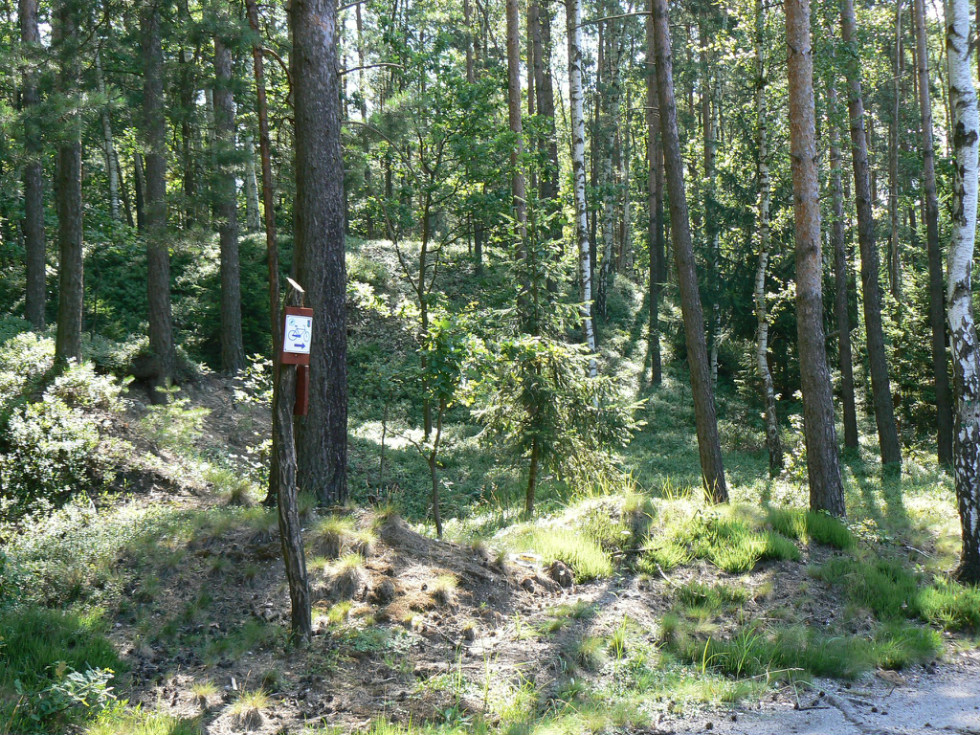

Top 3 activities to do in Pieńsk

Visit the Municipal Cultural Centre
Take part in the numerous events organised by the Municipal Cultural Centre. It also houses a library that is well worth a visit.

Kayak on the Nysa River
The wild nature of the protected Natura 2000 area makes time spent in kayaks and inflatable rafts truly enjoyable.

Head to the Tourist Information Point
The Tourist Information Point offers a wide range of brochures, maps of walking and cycling trails, as well as guidebooks promoting the natural, tourist, and cultural attractions of the Lower Silesian Forests (Bory Dolnośląskie) and the border region.